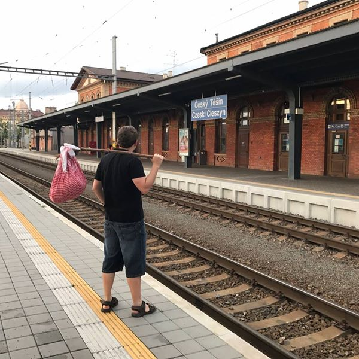

Cesta kolem světa začíná! 10.7.2017
Po mnoha letech přemýšlení a několika měsících příprav je tady den D! Vše sbaleno do praktického balíčku, a tak mohu vyrazit do Mongolska učit se stopovat. Na pár měsíců/let tedy ahoj, Evropo!
